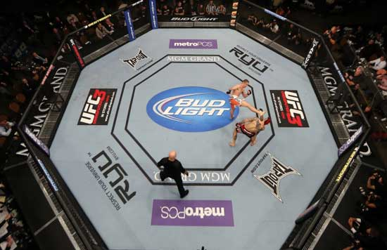

Las normas actuales de la Ultimate Fighting Championship se habían establecido originalmente por la Junta de Control de Atletismo de Nueva Jersey.48 El conjunto de "Reglas Unificadas de Artes Marciales Mixtas" que Nueva Jersey establecía ha sido adoptada en otros estados que regulan las artes marciales mixtas, incluyendo Nevada, Luisiana y California. Estas reglas también son utilizados por muchas otras promociones dentro de los Estados Unidos, llegando a ser obligatorio para los estados que han adoptado las normas, por lo que se han convertido en el conjunto estándar de facto de las normas para las artes marciales mixtas profesionales en todo el país.
Los combates de UFC varían en longitud máxima, en función de si el combate es para un título del Campeonato, o es la pelea de una cartelera "evento principal". En todas las peleas, cada ronda no puede tener más de cinco minutos. Las peleas por el campeonato duran un máximo de cinco rondas. Comenzando con UFC 138 el 5 de noviembre de 2011, fuera de campeonato "evento principal" (es decir, la pelea final en la tarjeta) también duran un máximo de cinco rondas. Las peleas no principales en los eventos duran un máximo de tres rondas. UFC on FX: Alves vs. Kampmann destaca por tener dos peleas de peso mosca en la organización como parte de su primer torneo de peso mosca. Hay un período de descanso de un minuto entre rondas.

La jaula de UFC es una estructura octogonal con paredes de metal alambrado revestido con vinilo negro y tiene un diámetro de 32 pies (9,8 m), permitiendo que 30 pies (9,1 m) de espacio de punto a punto. La valla es de 5 pies 6 pulgadas (1,70 m) a 5 pies y 8 pulgadas de altura (1,78 m). La jaula se asienta encima de una plataforma, elevándola 4 pies (1,2 m) del suelo. Cuenta con acolchado de espuma en la parte superior de la valla y entre cada una de las ocho secciones. También cuenta con dos puertas de entrada y salida opuestas entre sí.49 La alfombra, pintada con los logotipos de patrocinio y arte, se sustituye en cada evento.